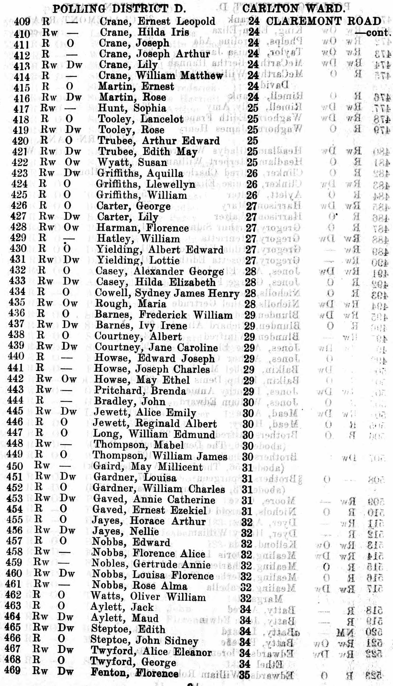

Sydney James Henry Cowell 1884 - c1954
[ Home ] | [ Calendar ] | [ Surnames Index ] | [ Census Index ] | [ Family History ]A naval pensioner seaman and the 2nd of 4 children of John Cowell (a police constable) and Emma Mills, Sydney Cowell, the third cousin twice-removed on the mother's side of Nigel Horne, was born in New Brompton, Kent, England on Feb 6, 18841,2,3 and baptized in Chatham, Kent, England on Mar 2, 1884.
During his life, he was living at 71 Victoria Road, Willesden, London, England on Apr 5, 18917; in Plymouth, Devon, England on Mar 31, 1901; and at 28 Claremont Road, Kilburn, London in 19246 (the same place as his parents had been living on Jun 19, 1921), in 19365 and on Sep 29, 19391. He served in the navy from Apr 14, 1900 to Oct 1, 1938 (Royal Navy).
He died c. May 1954 in Paddington, London, England4.
Parents
- John Charles was born on May 10, 1862
- Emma Elizabeth was born in 1861
Citations
- 1939 Register - Findmypast (was recorded at this address)
- England & Wales births 1837-2006 - Findmypast
- Kent Baptisms - Findmypast
- England & Wales deaths 1837-2007 - Findmypast
- 1936 Electoral Register
- 1924 Electoral Register
- 1891 England, Wales & Scotland Census - Findmypast (was age 7 and the son of the head of the household)
Media
1901 UK Census

1936 Electoral Register

Sydney Cowell - Naval Medals

1936 Electoral Register
1924 Electoral Register

1939 Register Transcription - TNA-R39-0972-0972F-013-03
England & Wales deaths 1837-2007 - BMD/D/1954/2/AZ/000197/015
England & Wales births 1837-2006 - BMD/B/1884/1/AZ/000129/262
1891 England, Wales & Scotland Census Transcription - GBC-1891-0007931683
British Royal Navy Seamen 1899-1924 Transcription - GBM-ADM188-6331
Kent Baptisms - PRS/MEDWAY/BAP/0113442
Family Tree

Generated by ged2site. Last updated on Jun 11, 2024